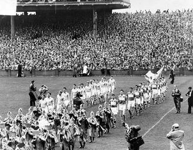
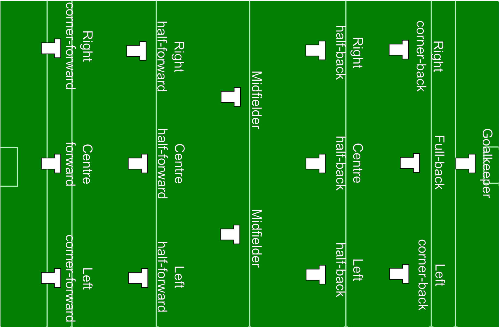

History of the sport

References to Irish Football are practically non-existent before the 1600s the earliest records of a recognised precursor to modern Gaelic football date from a game in County Meath in 1670, in which catching and kicking the ball were permitted.
Notwithstanding the banning in 1695 of Sunday football (and Hurling) by the Sunday Observance Act, the 17th and 18th centuries provided several detailed accounts of the playing of both codes. The blind Louth poet Seamus Dall Mac Cuarta described a football match played near Slane in the late 1600s between teams from the districts bordering the rivers Boyne and Nanny. Between 1758 and 1766, Dublin newspapers reported games at Finglas, Milltown and Drumcondra.
Football flourished in many areas in the first 40 years of the 19th century. In Kerry, the cross-country version known as caid was then popular, as it continued to be all through the century. A six-a-side version was played in Dublin in the early 18th century, and one hundred years later, there were accounts of games played between county sides.
The GAA continues to develop abroad, led by the Irish Diaspora. The Irish who emigrated brought their national games with them with both regional and club units now well established in the United States, Australia, Britain, mainland Europe, Canada, Asia and many other parts of the world. 400 clubs promote the activities of the GAA around the world.
The organisation is based around the traditional parish and county structures of Ireland. As a community-based organisation, it is often stated that it is difficult to determine where the community ends and the GAA club starts, as the two are so often intertwined. The GAA has over 2,200 clubs in all 32 counties of Ireland.
Every summer the inter-county All-Ireland Championships capture the attention of the Irish public. Regional towns heave with the arrival of large numbers of supporters and all the colour, noise and excitement that they bring - culminating with the showcase All-Ireland finals in Croke Park during September.
more....
How to play

The ball used in Gaelic Football is round, slightly smaller than a soccer ball.
The ball can be carried in the hand for a distance of four steps and can be kicked or "hand-passed", a striking motion with the hand or fist. After every four steps the ball must be either bounced or "solo-ed", an action of dropping the ball onto the foot and kicking it back into the hand. You may not bounce the ball twice in a row. Players may contest for the ball by playing it with the hand or by shoulder charging an opponent side-to-side.
To score, you put the ball over the crossbar by foot or fist for one point or under the crossbar and into the net by foot or the hand / fist in certain circumstances for a goal, the latter being the equivalent of three points.
A goal is signalled by raising a green flag, placed to the left of the goal. A point is signalled by raising a white flag, placed to the right of goal.
Officials for a game comprise of a referee, two linesmen (to indicate when the ball leaves the field of play at the side and to mark '45’ free kicks) and four umpires (to signal scores, assist the referee in controlling the games, and to assist linesmen in positioning '45' frees).
The gaelic football rules state that each gaelic football team has 15 players on the field. The team lineup usually amounts to one goalkeeper, six defensive players (full-backs and half-backs), two mid-field players, and six offensive players (forwards and half-forwards).
A team can substitute a maximum of 6 players per game. When a match is a tie game, it goes into extra time. Each team has a maximum of 3 substitutions during extra time. However, this is regardless if the team has or has not used a substitution in regulation.
Once a team substitutes a player, they are not allowed to re-enter for the rest of the game. The exception is if the referee requests a temporary substitution for an injured player or one covered in blood.
If that player is medically cleared to return to the game, they can replace the temporary substitute.
A technical foul typically results in a change in possession with no card.
An aggressive foul results in a free kick or penalty kick and the referee can decide whether the incident results in no card, yellow card, black card, or red card.